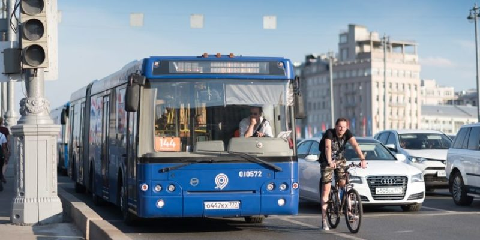
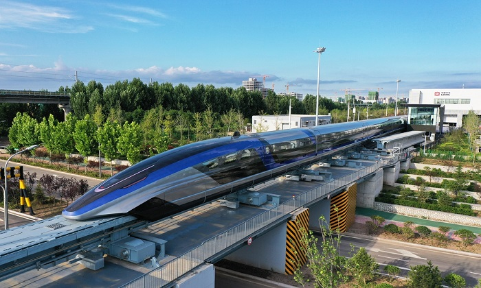
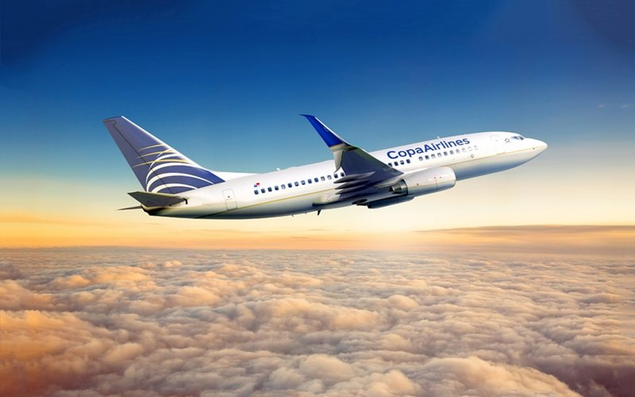
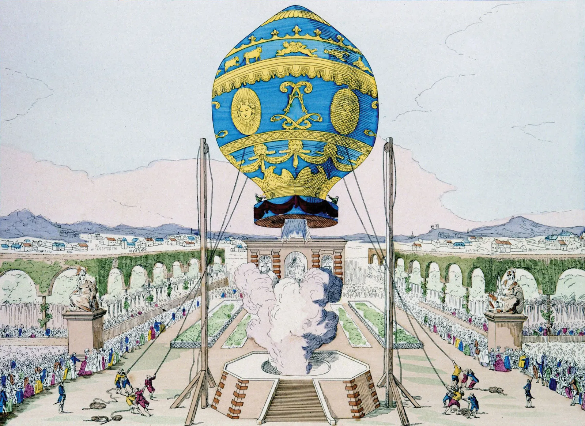
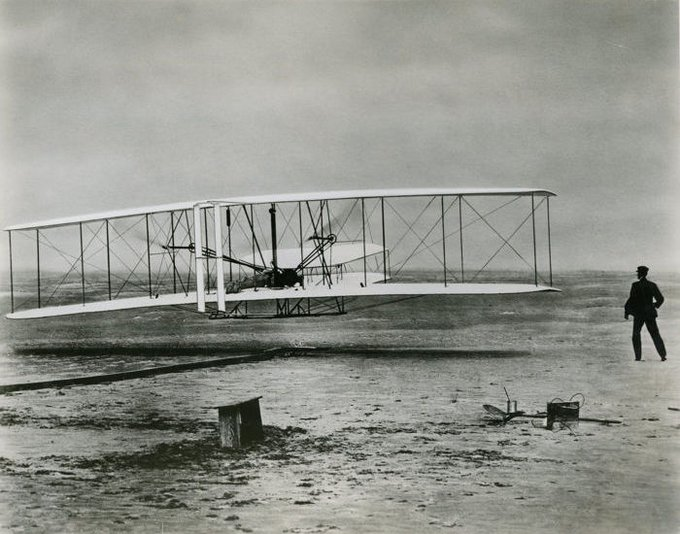
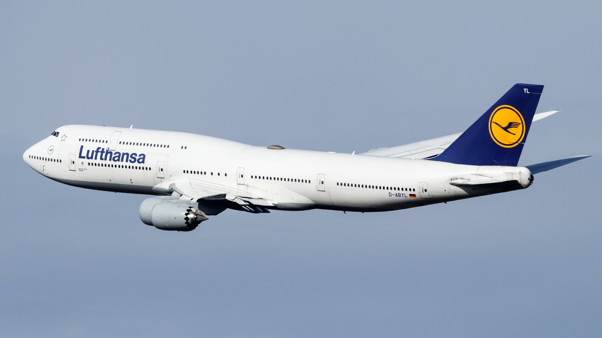
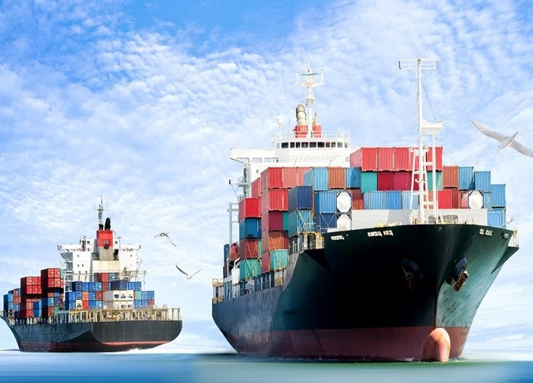
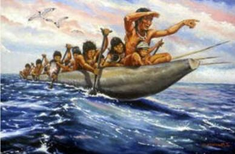
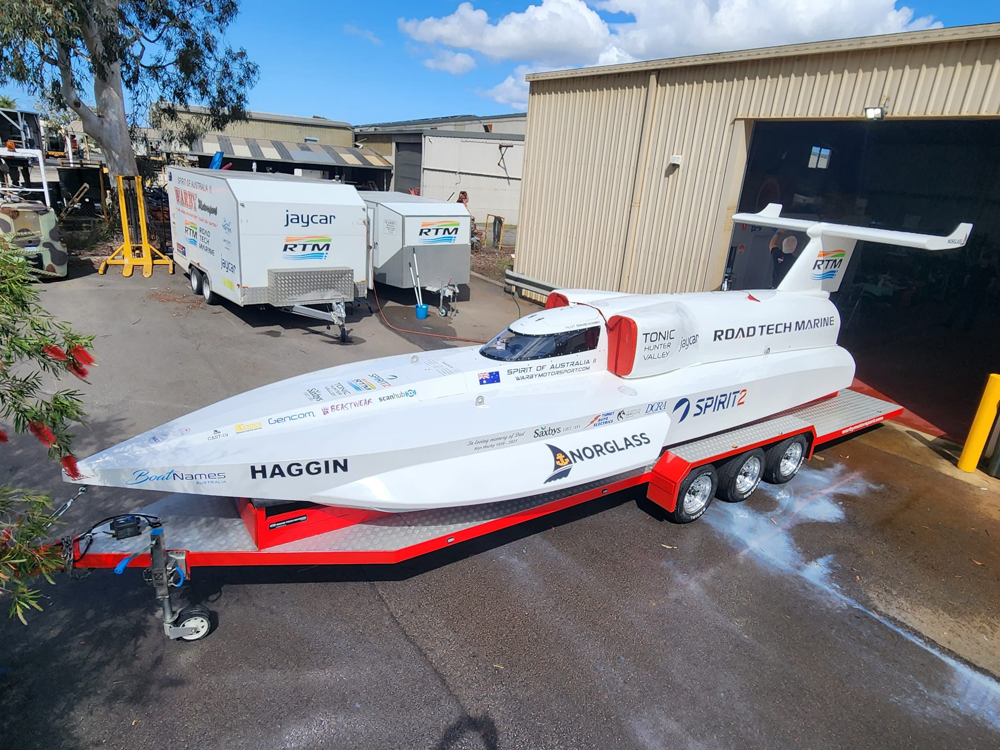

Los medios de transporte son aquellos vehículos que se encargan de trasladar personas y mercancías de un lugar a otro. Seguro que conocéis un montón, los coches, aviones, trenes y barcos son algunos de ellos. Al existir tantos diferentes, suelen clasificarse en tres tipos según el medio por el que viajan:
Debemos utilizar estos medios de transporte de manera responsable, ya que algunos de ellos son muy contaminantes y pueden afectar al medio ambiente. Siempre que sea posible debemos utilizar medios de transporte públicos, en los que compartimos el vehículo con otros usuarios de forma que reducimos nuestra huella en el planeta Tierra. Recuerda que otra forma de trasladarnos en distancias cortas es ir a pie, caminar es la forma más ecológica de desplazarnos.
Fecha de Publicación:
Son aquellos vehículos que viajan por tierra o incluso por debajo de ella, como el metro. Algunos medios terrestres están motorizados, como los coches, las motos o los camiones; en cambio, algunos no tienen motor, ¿se te ocurre alguno? seguro que a menudo utilizas la bicicleta para desplazarte, ese es un gran ejemplo.

Hace más de 4.000 años, los habitantes de Mesopotamia (una de las primeras civilizaciones de la historia) se dieron cuenta de que necesitaban una forma de transporte más eficiente. Entre el 3700 y 3200 a.C. inventaron y empezaron a utilizar la rueda. En cada carro o carreta emplearon cuatro ruedas y dos ejes, además de ayudarse de la fuerza de los animales para arrastrar la carga.Esta innovación supuso una revolución en la velocidad y capacidad de carga. A partir de entonces, la civilizaciones como la del Antiguo Egipto, Grecia y Roma clásicas mejoraron la calidad de los carros.
El Maglev es el vehículo terrestre más rápido disponible para un rango de 1.500 kilómetros, según un informe del fabricante chino CRRC que recoge Global Times. Este tren de levitación magnética, que hizo su debut en la provincia china Qingdao, alcanza los 600 kilómetros por hora.

El transporte aéreo es la actividad de desplazamiento que permite el traslado de personas, mercancías y correo en aeronaves. Por tanto, hablamos del tipo de transporte que viaja por el aire y que se encuentra presente en aeropuertos.

Uno de los mayores sueños del ser humano ha sido siempre volar. A finales del siglo XVIII, los hermanos Montgolfier crearon los primeros modelos de globo aerostático. Un siglo después se inventó el dirigible, que a diferencia del globo podía ser controlado durante el vuelo.

Pero el gran hito del transporte aéreo llegó el 17 de diciembre de 1903, cuando los hermanos Wright consiguieron llevar a cabo el primer vuelo con motor de la historia. A partir de entonces, la tecnología aeronáutica evolucionó hasta los aviones comerciales y las naves espaciales de hoy en día.

El Boeing 747-8 es actualmente el avión de fuselaje ancho más rápido del mundo. La razón principal de su impresionante velocidad de crucero de 1.060 km/h es la tecnología moderna que utiliza: Boeing ha perfeccionado el diseño para que la aeronave tenga las mejores características de vuelo.

El transporte marítimo es la actividad de mover mercancías de un destino a otros a través del mar. Por sus costos y características, este tipo de transporte es ideal para mover grandes volúmenes de productos a través de contenedores y a lo largo de una amplia variedad de rutas marítimas.

Gracias a la invención de la rueda, las sociedades empezaron a explorar nuevos territorios. Se establecieron en zonas cercanas a ríos, mares y océanos y crearon las primeras embarcaciones. Al mismo tiempo que la rueda, hacia el año 3500 a.C., se registran las primeras formas de transporte marítimo que podían llevar pequeñas cargas y unos pocos tripulantes en trayectos cortos.
Las embarcaciones originales se impulsaban con la fuerza de manos y pies. Una de las pioneras fue la balsa, que constaba de poco más que una madera flotante. Después surgió la canoa, que se movía gracias a remos manipulados por la fuerza humana.

Spirit of Australia: Esta emblemática embarcación es famosa por su participación en carreras de velocidad en el agua. Diseñada por Ken Warby en la década de 1970, el Spirit of Australia ostenta el récord mundial de velocidad en una embarcación propulsada por una turbina de avión. En 1978, Warby alcanzó una velocidad impresionante de 511,1 km/h en el lago Blowering en Australia.
